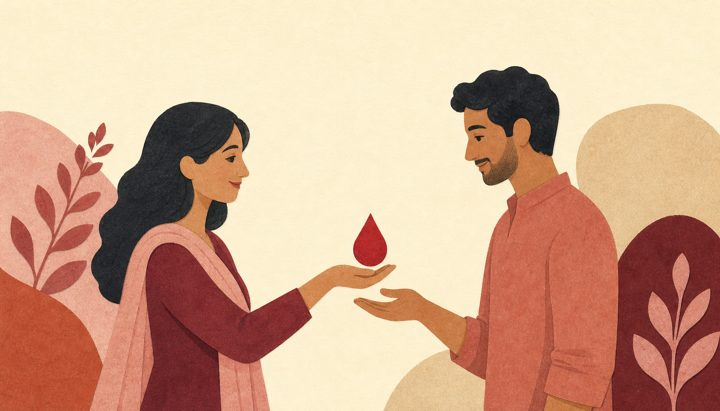

1
Post the need
Share the essential details. Your request goes to a moderator for review before appearing on the board.
রক্তের প্রয়োজন হলে গ্রুপ ও জেলা দিয়ে খুঁজুন। চাইলে রক্তদাতা হিসেবেও নাম লেখাতে পারেন।

এলাকা দিয়ে খুঁজলে ডোনারের দেওয়া বানান ব্যবহার করুন। না পেলে ঘরটি খালি রাখুন।
সরাসরি তথ্য পাওয়া যাচ্ছে না। সংখ্যা ও তালিকা পুরোনো বা অসম্পূর্ণ হতে পারে।
রক্ত দেওয়ার আগে হাসপাতালের সঙ্গে প্রয়োজন নিশ্চিত করুন।
Share the essential details. Your request goes to a moderator for review before appearing on the board.
While you wait for review, search for donors and share the details. Approved requests appear on the board.
Confirm the need with the hospital and availability with the donor. When the need is met, mark the request fulfilled.
These figures reflect registrations and self-reported availability. They may be outdated if the connection is unavailable.
Join the WhatsApp community to share requests and connect with volunteers. Confirm the need with the hospital before responding.
Leave any time · Read our privacy policy
ডোনাররা নিজেরাই তথ্য দিয়েছেন। যোগাযোগের আগে প্রাপ্যতা ও হাসপাতালের তথ্য নিশ্চিত করুন। ফোন নম্বর প্রকাশ্যে পাওয়া যায়। গোপনীয়তা নীতি পড়ুন।
The blood bank can tell you whether you are eligible to donate.
Read donation FAQs